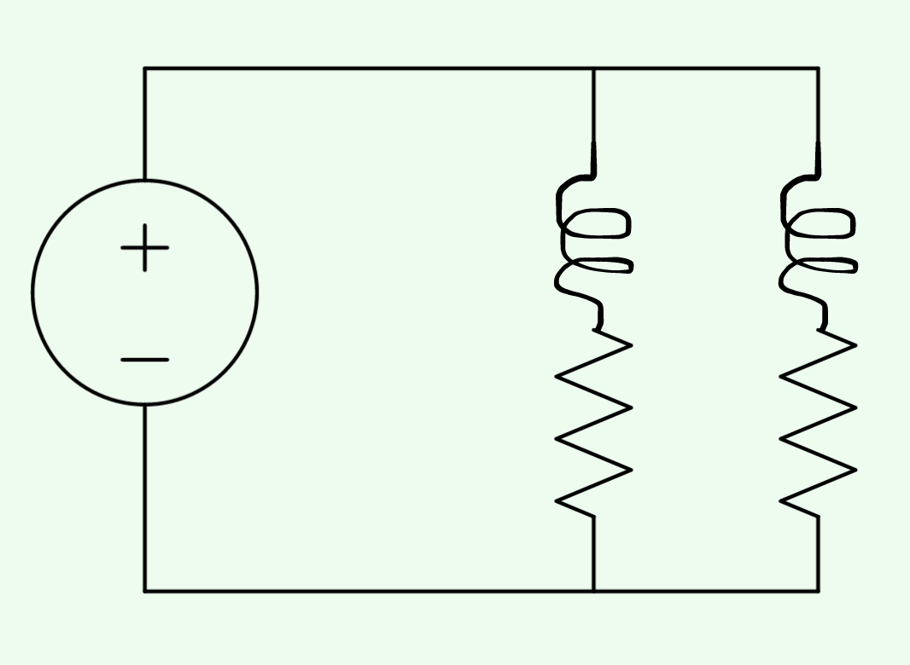

⇦ Unit 7
⇦ First-Order Nonlinear Models
Some real-life phenomena can be modeled with systems of equations. An example is this is a circuit with parallel elements.

In this case, the voltage supply is 10V, both resistors are 1 \(\ohm\) and both inductors are \(1 H\) (which is a lot by the way). The current in loop 1 is \(I_1\). The current in loop 2 is \(I_2\).
Using both loops with Kirchhoff’s voltage law, you get the following equations:
\[L_1I_1'+R_1I_1=10\to I_1'+I_1=10\]
\[L_2I_2'+R_2I_2=10\to I_2'+I_2=10\]
This can be rewritten as a system of equations: \[\vec{X}'=\begin{bmatrix} -1&0\\0&-1\end{bmatrix}\vec{X}+\begin{bmatrix} 10\\10\end{bmatrix}\] where \(\vec{X} = \begin{bmatrix}I_1\\I_2 \end{bmatrix}\).
This can be solved using Eigenvalues and Eigenvectors.